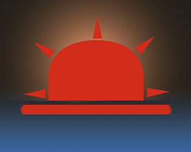

Oyunlarım

Normal Game
2D troll ve rage mekanikleri üzerine kurulu, klasik platform alışkanlıklarını kasıtlı olarak bozan ve oyuncunun sabrını test eden mobil platform projesi.
Durum: Yayımlandı - Aktif Güncelleme Alıyor
Devlog #1

Dawning Upon Horizons
Masaüstü zar (RNG) mekaniklerini sürükle-bırak kart stratejisiyle harmanlayan, bir babanın ahlaki çıkmazları etrafında şekillenen ve her kararın kelebek etkisi yaratarak farklı finallere yol açtığı, 48 saattlik Gamejamde geliştirilmiş hikaye odaklı mobil RPG projesi.
Durum: Game Jam Sürümü - Prototip
Game Jam Prototipi, Animatik ve Tanıtım - PC Editör Kaydı